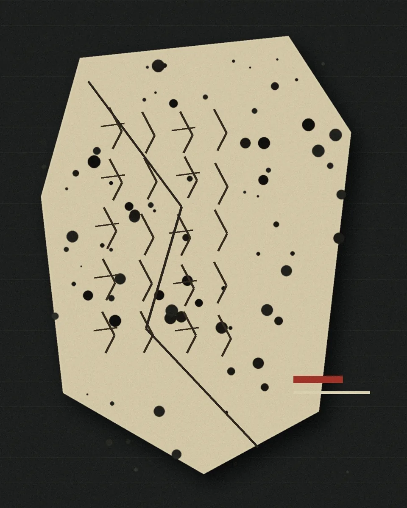

你可以输入一段甲骨卜辞，或直接问“当时的人怎样理解日食”。我会把依据一起列出来。
主视觉为传播插图，不是甲骨原片或拓片
天象
先看懂今天的天空
日食，是月亮投下的一片影子
当月球运行到太阳和地球之间，它的影子可能落到地球上。站在影子经过的地方，人们会看到太阳被遮住一部分或全部，这就是日食。
实时几何模拟
太阳光源
月球遮挡体
地球观测位置
当前设备无法显示三维场景，仍可使用下方控件阅读日食原理。
轨道交点
为什么不是每个月都有日食？
月球轨道与地球绕太阳运行的平面约有 5° 倾角。只有朔月靠近轨道交点时，月影才可能扫过地球。
影子正落向地球本影与地表相交
0.0°
同一场天象，不同地点会看见不同模样
太阳会被遮住多少？
太阳被完全遮住
日全食
观测者位于月球本影扫过的狭窄区域内。短暂的全食阶段里，明亮的日面被遮住，日冕才更容易被看见。
全食带很窄，同一时刻并不是整颗地球都能看到日全食。
观测提醒 除全食阶段外，不能用肉眼或普通墨镜直接观看太阳，应使用合格的太阳观测镜。

传播情境图 / 非原片
殷商
再回到三千多年前
天空出现缺口，问题被留在甲骨上
这种天象早在使用甲骨文的时代就已进入先人的观察与贞问。今天能看到的，不只是一条“古人见过日食”的结论，更是他们怎样面对一次异常天象。
卜辞提出的是问题，不一定已经给出“凶”或“吉”的答案。
商代卜辞把天象放进占卜、祭祀与政治生活的语境中。
不能把所有日食记录简单概括为同一种固定预兆。
具体一辞怎样解释，要看字形、上下辞、分期和同类辞例。
卜辞
逐条打开，不替争议下结论
甲骨日食记录与研究线索
点击句子即可展开释义、年代、学者观点和争议；不同条目可以同时保持展开。这里的逐条记录来自已经审核发布的记录整理；尚未形成独立条目时，会从已经发布的记录表同步展示。
读取中
正在读取甲骨记录……
没有找到匹配的条目。
成果
从研究工作台审核发布
已经可以公开阅读的研究成果
这里呈现的是研究工作台审核后正式发布的作品。未确认资料、未批准内容和原始论文不会在公众站显示。
公开作品
0
已确认来源
0 / 7
正在读取审核发布成果……
问答
问问古人的天空
从一句卜辞问起，也可以先问一个大问题
回答只调用页面中的日食常识、甲骨记录和文献来源。没有证据的部分会直接说“尚不清楚”。